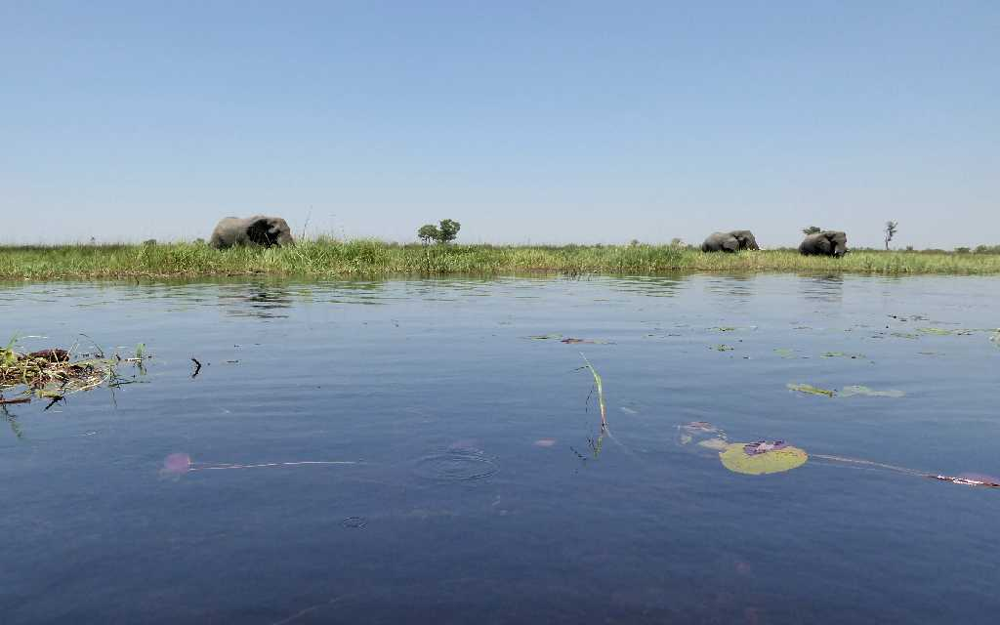
Boat and walking safari Okavango Delta
アンゴラから流れ出るオカバンゴ川がカラハリ砂漠の窪地に流れ込む世界最大の内陸デルタで２５,０００㎢におよぶ
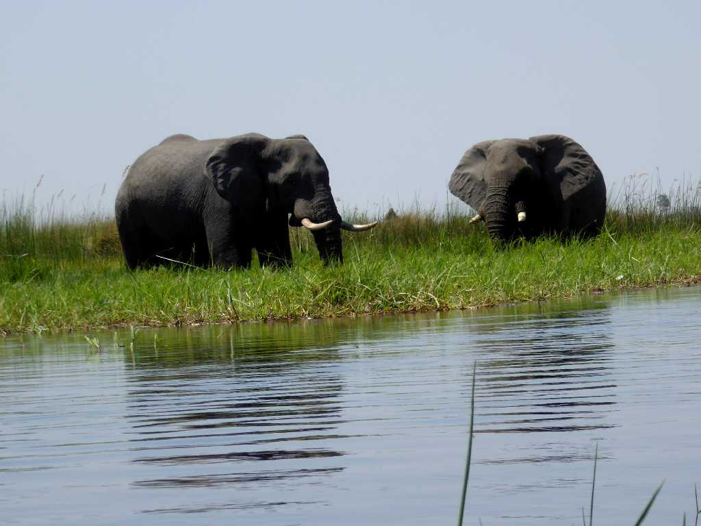
African Elephant Boat safari Okavang Delta
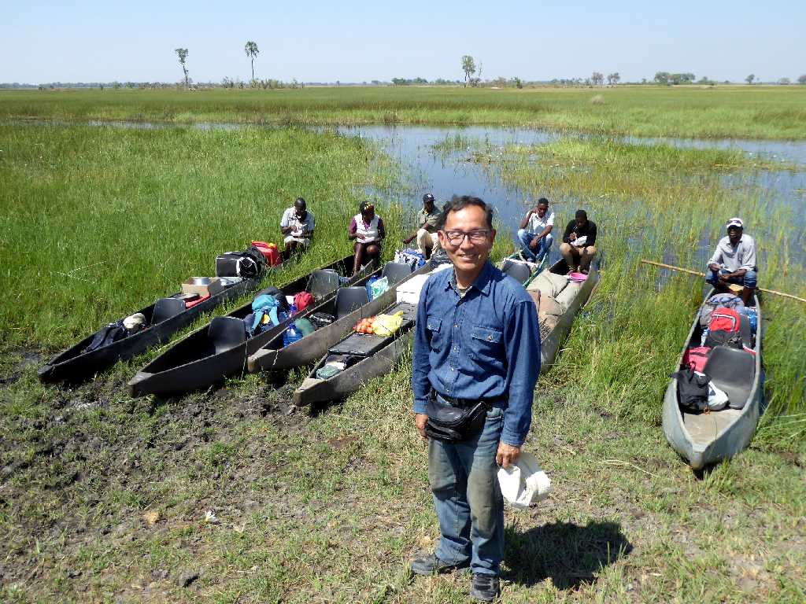
October 2 2018 Boat safari Okavang Delta
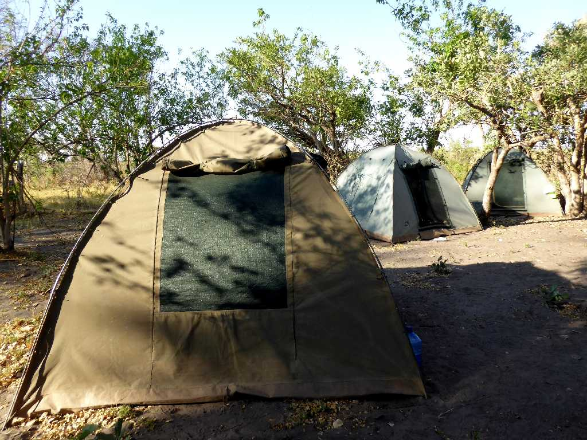
Camp site Okavango Delta
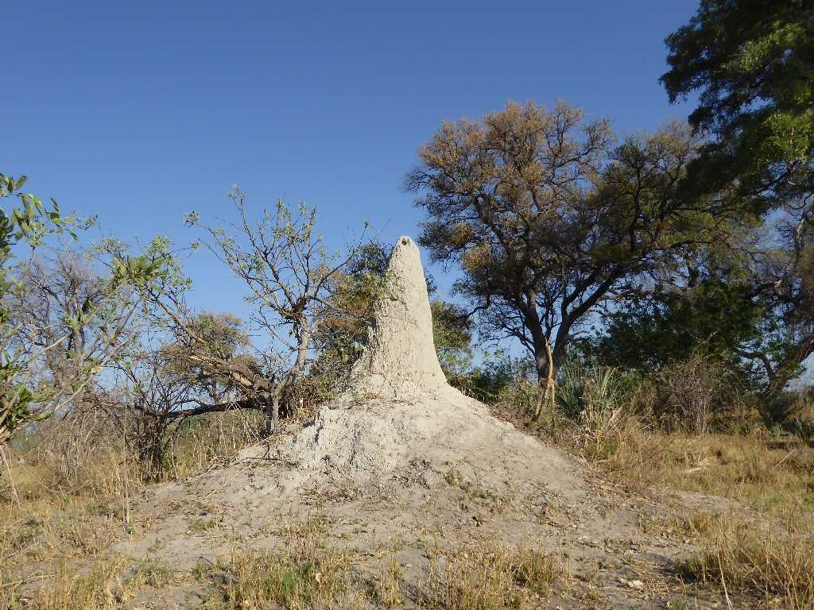
Termite mound Anthill Walking safari Okavango Delta
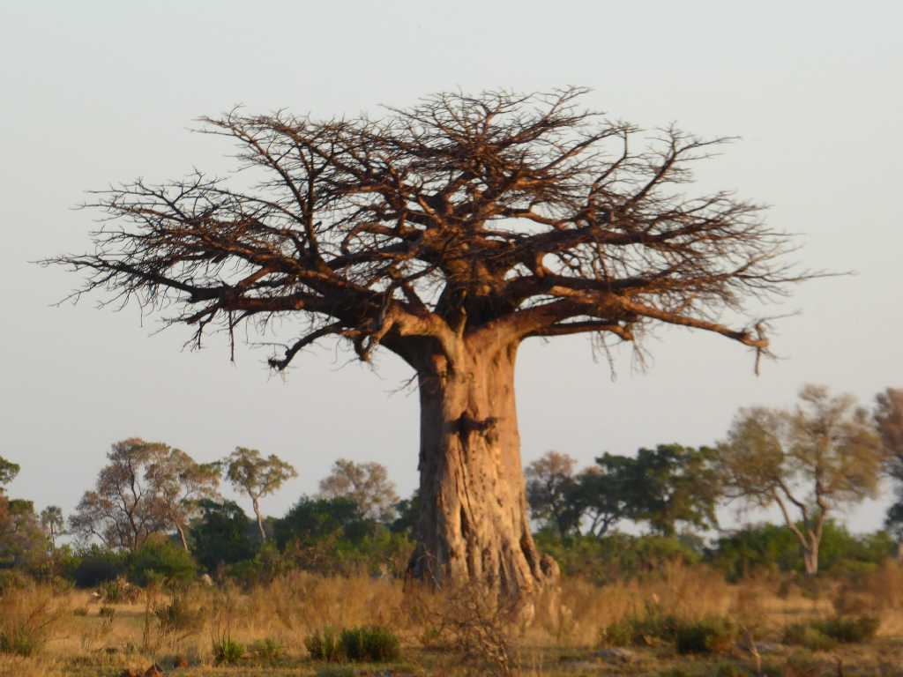
Baobab Walking safari Okavango Delta
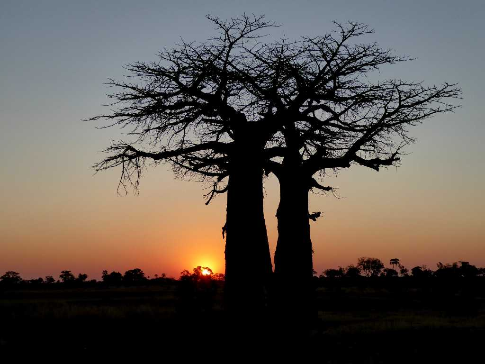
October 2 2018 18:19 Sunset Baobab Walking safari Okavango Delta
オカバンゴデルタは冬季の洪水により居住が困難で農地開発も進まず広大な自然が残っている
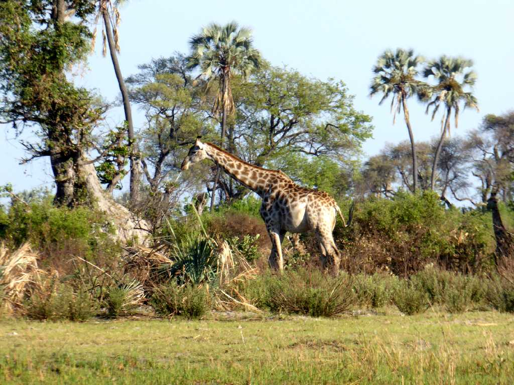
Giraffe Walking safari Okavango Delta
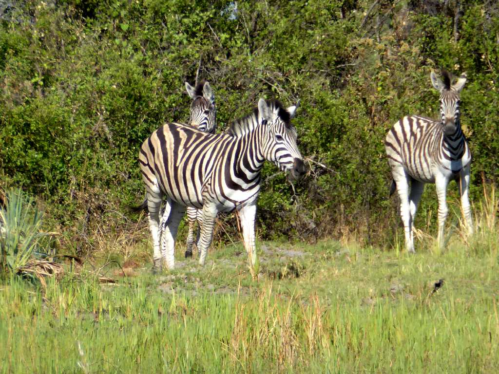
Zebra Walking safari Okavango Delta
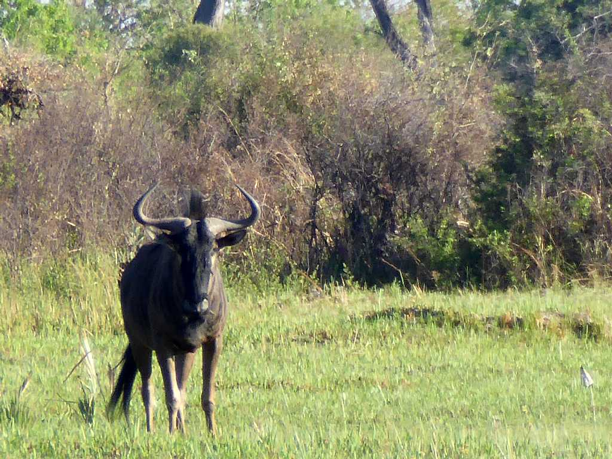
Gnu Walking safari Okavango Delta
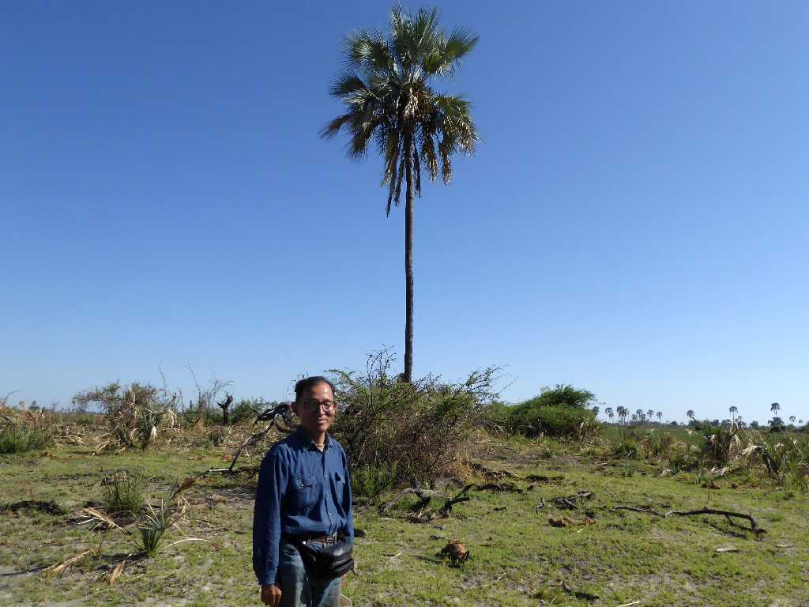
October 3 2018 Walking safari Okavang Delta
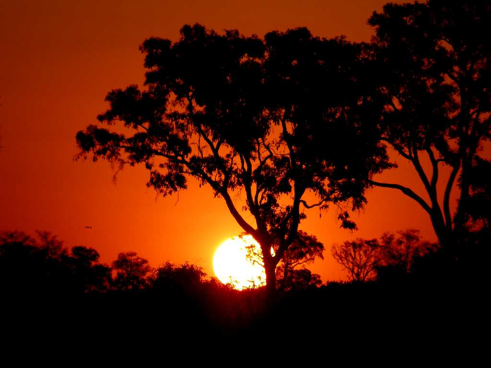
October 3 2018 18:21 Sunset Boat safari Okavango Delta
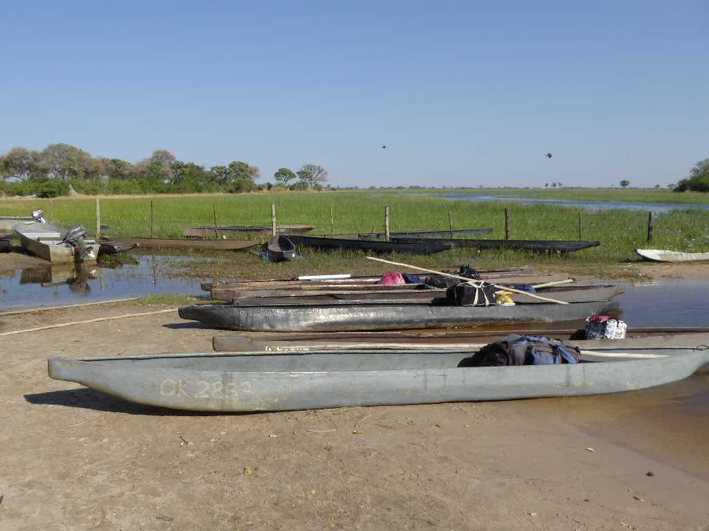
Wharf Boat safari Okavang Delta
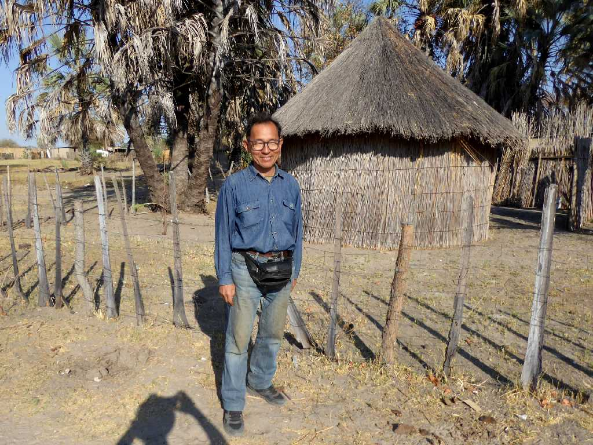
October 4 2018 Village Wharf Okavang Delta
AI解説